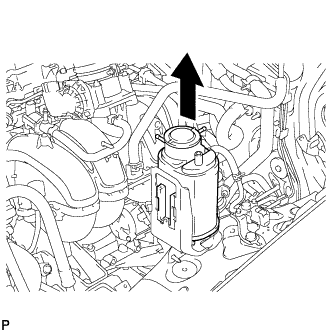
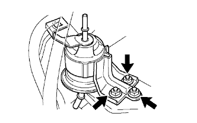

BỘ LỌC NHIÊN LIỆU > THÁO |
| 1. XẢ ÁP SUẤT CỦA HỆ THỐNG NHIÊN LIỆU |
Ngắt cáp ra khỏi cực âm của ắc quy.
Hãy tháo tấm ốp bậu cửa bên phía người lái.
Dùng một tô vít, nhả khớp 7 vấu.
Dùng một dụng cụ tháo kẹp, nhả khớp 3 kẹp và tháo tấm ốp bậu cửa.
 |
Hãy lật thảm trải sàn và ngắt cút nối ra, như được chỉ ra trên hình vẽ.
Ngắt cáp ra khỏi cực âm của ắc quy.
Khởi động động cơ. Sau khi động cơ tự chết máy, hãy tắt khoá điện OFF.
Quay khởi động động cơ một lần nữa và sau đó kiểm tra rằng động cơ không thể nổ được máy.
Nới lỏng nắp bình nhiên liệu và sau đó xả áp suất bình nhiên liệu hoàn toàn.
Nối giắc của bơm nhiên liệu.
Hãy lắp tấm ốp bậu cửa bên phía người lái.
Xoá các mã DTC (Xem trang Kích chuột vào đây).
| 2. NGẮT CÁP ÂM RA KHỎI ẮC QUY |
| 3. THÁO BỘ LỌC THAN HOẠT TÍNH |
 |
Ngắt 3 ống ra khỏi bộ lọc khí xả.
|  |
Nhả khớp bộ lọc khí xả ra khỏi giá bắt.
| 4. THÁO ỐNG NHIÊN LIỆU |
Tháo ống ra khỏi kẹp.
Hãy kẹp và kéo cút nối của ống nhiên liệu để ngắt nó ra khỏi ống phía trên của bộ lọc nhiên liệu.
| 5. THÁO ỐNG NHIÊN LIỆU CHÍNH |
Tháo đệm ống nhiên liệu.
Nhả các vấu hãm bằng cách nhấc nắp của cút nối. Sau đó kẹp và kéo cút nối của ống nhiên liệu chính để ngắt nó ra khỏi ống dưới của bộ lọc nhiên liệu.
| 6. THÁO BỘ LỌC NHIÊN LIỆU |
|  |
Tháo 3 đai ốc và bộ lọc nhiên liệu.